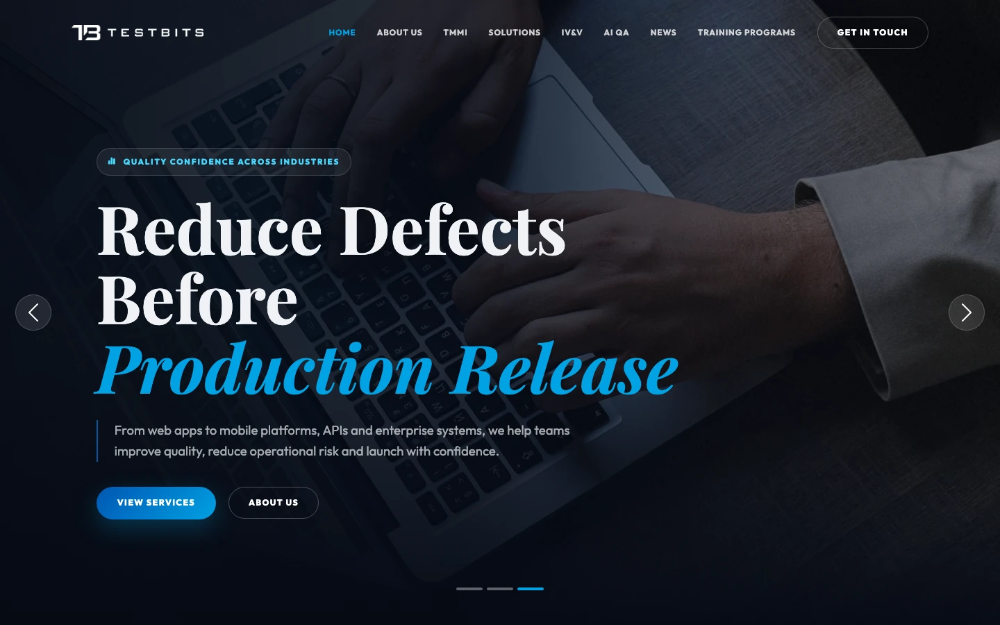
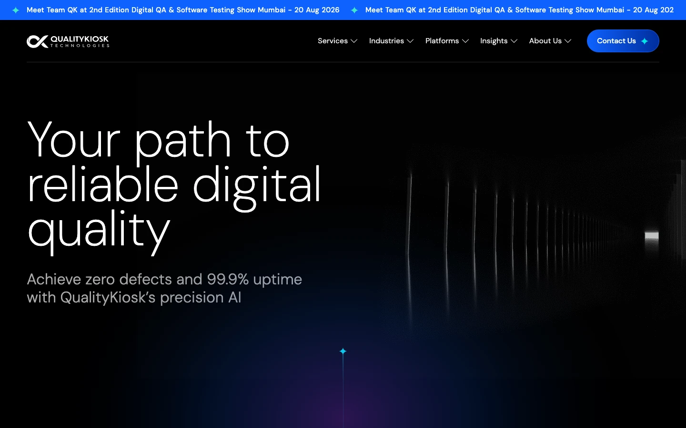
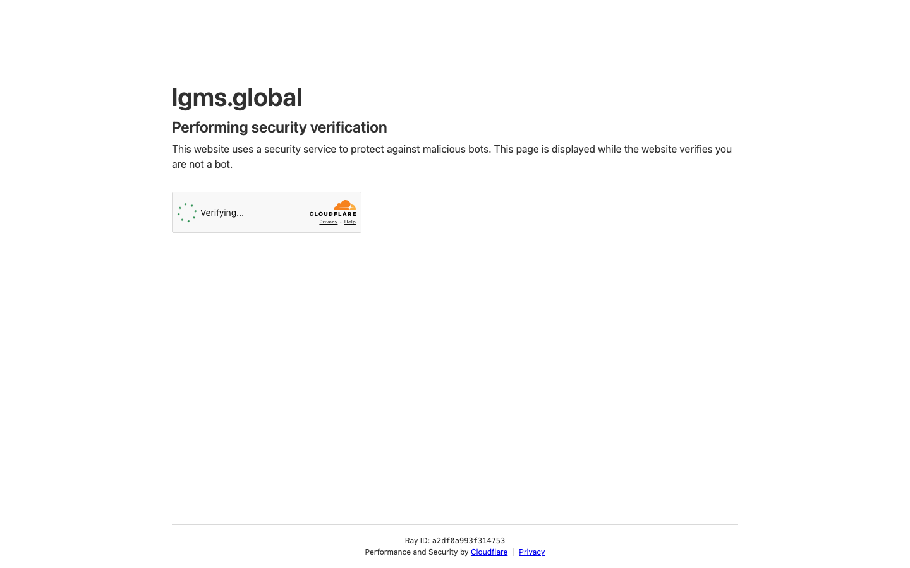
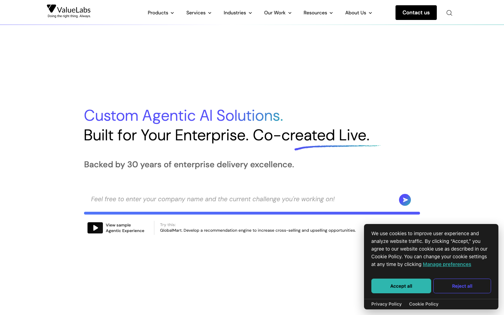
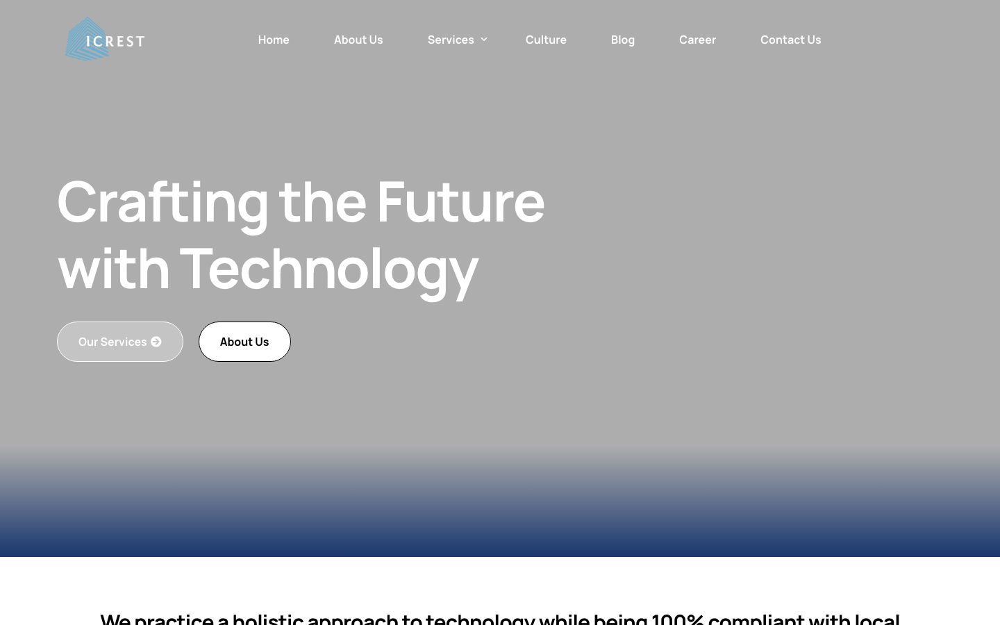
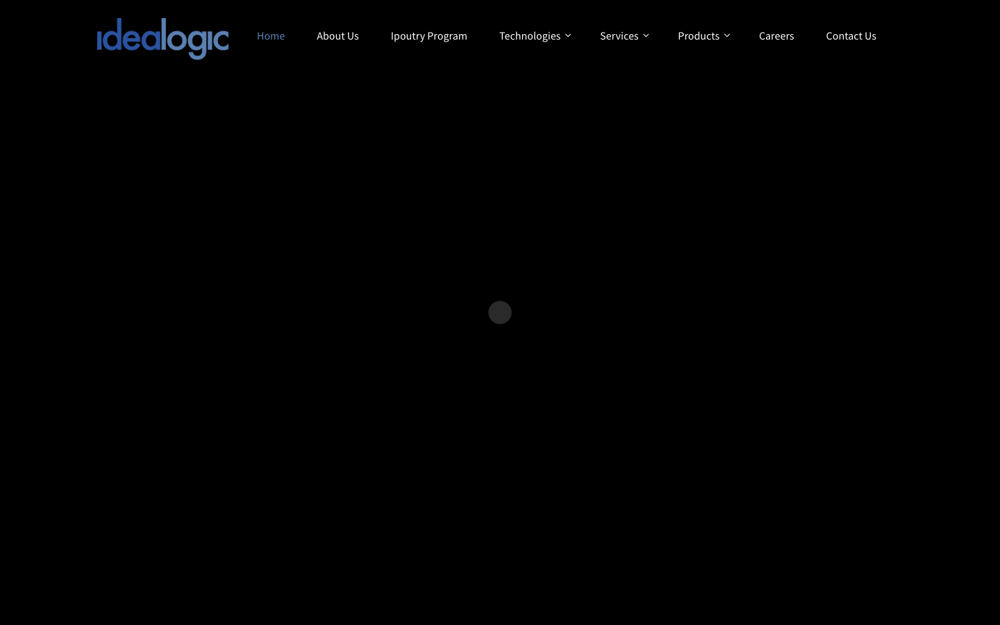
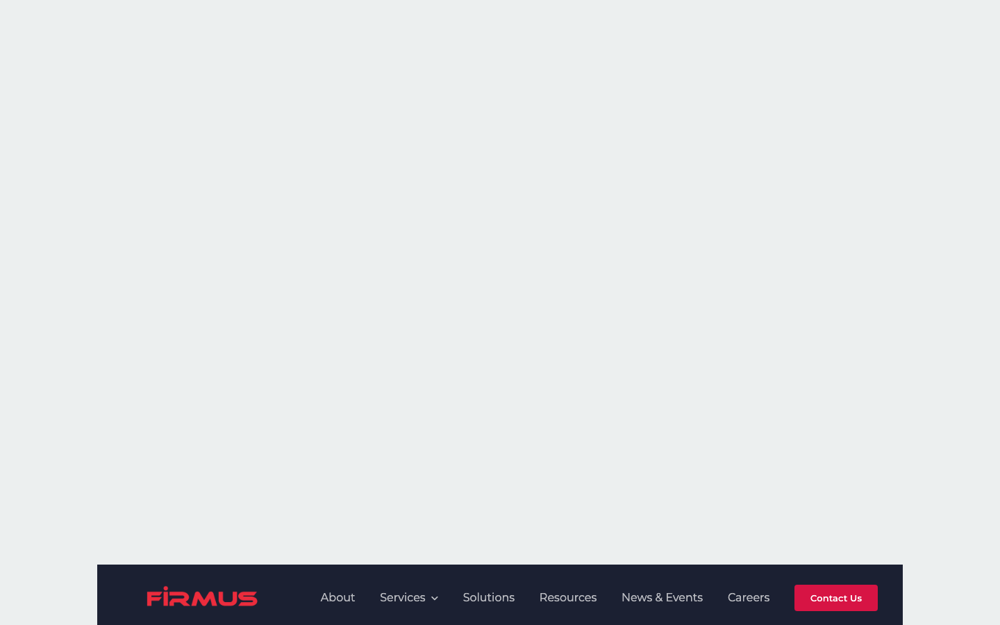
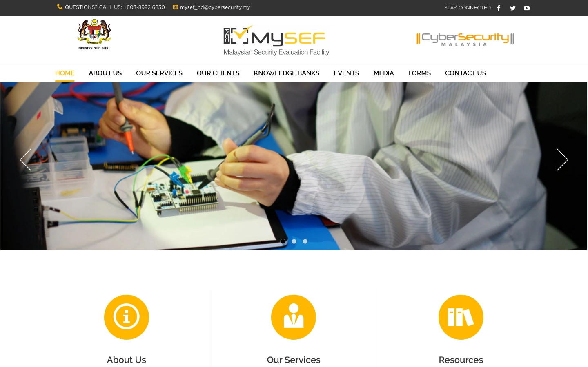

The rivals publish their proof. The licence holder publishes nothing.
Software testing is a proof business: the vendor who documents their credibility best wins the shortlist. This board reads the rivals a Malaysian bank, insurer or ministry actually weighs against AL AiN: who they are at entity level, what their brands are built on, the specific problem each one creates, and the specific opening each one leaves. Every live site was read on 20 August 2026, captures were taken with a real browser user agent and opened and looked at, and every company figure is either sourced or marked as that rival's own claim. The finding in one line: AL AiN holds the single rarest credential on this board and is the only company on it that publishes no numbers at all.
"IV&V Providers who intend to participate in government projects must have accreditation in MS ISO/IEC 17025 related to software testing from Standards Malaysia or recognition from TMMi Foundation in TMMi Level 3 and above."
That sentence, from MAMPU's own IV&V Quick Guide, defines the game. The competition happens in two arenas. Arena one, the shortlist: directories, referrals and the credentials a procurement panel can verify in writing, where maturity levels, accreditations and client walls decide who gets invited. Arena two, the delivery bench: rates, headcount and domain depth, where scale players win on price and coverage. And behind both sits a mandate: MOF circular PK2.1 requires IV&V on critical government systems, and BNM's RMiT makes rigorous testing an enforceable standard for every bank and insurer. Four anchors fix how this board is read.
AL AiN holds the rarest card
The Digital Ministry's SQA Portal lists four ISO/IEC 17025 software testing labs eligible for government IV&V. MIMOS lapsed December 2025, TÜV Austria is cybersecurity-scoped, PayNet serves the payments network. AL AiN, valid to 5 June 2028, is the only independent commercial lab standing. Nobody else on this board can say that.
AL AiN publishes nothing
Zero client counts, zero project counts, zero case studies, zero reviews, client logos as grey images with no names in text. Every serious rival on this board publishes at least one loud number. The rarest credential is held by the quietest company.
The shortlist runs on recycled data
The "Top 10 QA agencies in Malaysia 2026" article that ranks AL AiN fifth recycles Clutch profile data, and its number one pick is a Vietnamese AI studio that does no testing. Directory reputation is this shallow, which means a strong owned estate beats it easily.
The demand is mandated, on a schedule
PK2.1 mandates IV&V for critical government systems. RMiT paragraph 10.8 (in force 28 Nov 2025) mandates pre-deployment testing for financial institutions, with annual accredited penetration tests. E-invoicing pulls every business above RM1m turnover into integration testing. Act 854 puts 11 NCII sectors on audit cycles.
| # | Rival | Arena | Why they rank here | Their number | Site | Threat |
|---|---|---|---|---|---|---|
| 1 | Testbits | The mirror rival | Same model end to end: IV&V, MOF-registered, outsourcing, ISTQB and TMMi training, and it leads with "TMMi Level 5" in the headline. Fresher site, active blog, June 2026 posts | TMMi Level 5 | 7 | 9 |
| 2 | QualityKiosk | The banking QA heavyweight | 25 years, 300 global clients, 12K applications, analyst-firm validation, tier-1 bank logos, Malaysia office. Sits exactly on AL AiN's banking and insurance domains | 300 clients · 12K apps | 8 | 8 |
| 3 | LGMS Berhad | The security lane owner | Bursa Main Market, RM45.55m FY2024 revenue, first CREST pentest provider, its own ISO/IEC 17025 story in the security scope. Takes the security-testing slice of any tender | RM45.55m · 0249 | 7 | 6 |
| 4 | ValueLabs | The enterprise absorber | 7,000+ engineers, 300+ enterprise clients, delivery seat in the same Bukit Jalil tech park. Wins when QA rides inside a bigger outsourcing deal | 7,000+ engineers | 7 | 6 |
| 5 | iCrest | The aging incumbent | Two decades in operation, TCoE language, premium price band per directories. Zero published proof and a visibly stale estate | since 2006 | 4 | 5 |
| 6 | Idealogic | The paper twin | Same sub-US$25 band, deep non-functional menu on paper, IV&V claimed in directories. Dated site, no certifications, no evidence | < $25/hr | 3 | 4 |
| 7 | Firmus | Security specialist | CREST brand, full offensive stack, KL and Singapore. Security only, and its own homepage proof counters render as zero | CREST · est. 2008 | 6 | 3 |
| 8 | CyberSecurity Malaysia MySEF | The state evaluator | Government ISO/IEC 17025 evaluation facility under the MyCC scheme. Competes for the certification budget line, never the QA outsourcing scope | MyCC scheme | n/s | 2 |
AL AiN's own two faces first, because the comparison a procurement officer actually runs is side by side. Then the rivals as that officer met them on 20 August.
The house, both faces


The rivals








Six profiles, ordered by threat. Figures are sourced where a source exists and labelled as the rival's own claim where it does not. Threat is Brand Method's assessment of commercial risk to AL AiN's three lanes, not published data. Where a figure could not be evidenced it is marked not verified rather than estimated.
- Identical service map: IV&V, testing outsourcing, training. Every tender AL AiN sees, Testbits can answer.
- Better credential marketing: a panel that reads "TMMi Level 5" in a headline and finds AL AiN's SAMM badge only inside a header logo scores the wrong company higher.
- A fresher estate: active blog, modern build, working CTAs, against a site whose news is frozen at one date.
- No lab. TMMi certifies process maturity; it is not an ISO/IEC 17025 accredited laboratory, and Testbits is not on the JDN lab register.
- Zero named clients and zero numbers anywhere on the site. Their proof layer is one certificate deep.
- No banking wall: nothing equivalent to Bank Islam, MAMPU, MARA class logos, even as images.
- They own banking QA credibility in the region: a Malaysian bank comparing vendors finds named tier-1 logos against AL AiN's grey images.
- Analyst validation is a proof class AL AiN cannot buy at its size.
- Platform story: their products are named, demoed and cited; AL AiN's platform has no name on its own site.
- No Malaysian government identity: no MOF registration story, no IV&V lane, no place on the JDN register, no BM-language estate.
- India-first delivery and enterprise pricing: mid-market Malaysian buyers and agencies with data-residency sensitivities are underserved.
- No local lab: for work that must cite an accredited Malaysian laboratory, they cannot answer.
- The security slice defects: in any engagement where security testing is scoped separately, LGMS (or Firmus) takes it, shrinking AL AiN's ticket.
- Lab-story dilution: LGMS also says "first ISO/IEC 17025 lab", security scope. Two labs claiming firsts confuses the market unless AL AiN states its scope precisely: software testing, on the government IV&V register.
- They cannot bid the core: functional QA, IV&V, UAT, performance: outside their scope entirely.
- Their price of credibility is public: a listed company cannot serve the sub-RM100k engagement economically. The mid-market is open.
- Bundling: enterprise accounts buy QA inside bigger outsourcing contracts AL AiN is not party to.
- Neighbourhood optics: a global 7,000-engineer firm delivers from the same tech park, at a similar directory rate band for commodity work.
- Independence: IV&V exists precisely because the builder should not verify their own build. A bundled QA arm fails that test by definition; an independent accredited lab is the textbook answer.
- No government procurement identity in Malaysia, no BM estate, no MOF code.
- Relationship incumbency: two decades of enterprise and government relationships do not need a website to renew.
- The premium band normalises higher testing rates, and iCrest captures that value with less credential than AL AiN holds.
- Everything public-facing. No credentials, no evidence, no conversion path: any modern proof-led estate beats it on sight.
- No training lane, no security lane, no IV&V articulation.
- Price-band noise: in a directory sort by rate, Idealogic sits beside AL AiN looking equivalent to an unfamiliar buyer.
- Everything. No credential, no proof, no focus. One visible SAMM 829 statement separates AL AiN from this tier permanently.
The mirror rivals
Same buyers, same tenders, same service map. The direct fight, and it is winnable on credentials.
TMMi Level 5 as the entire brand. No lab, no clients shown. Take: the credential-as-headline playbook.
Same price band, long menu, zero proof. Take: nothing. It defines the tier AL AiN must visibly leave.
Twenty-year incumbent gone silent. Take: the warning. Relationships decay; published proof compounds.
The scale players
Not out-scalable. Out-position them on sovereignty, independence and the register.
Banking QA heavyweight with analyst validation. Take: the counters-and-named-logos proof format.
QA bundled inside enterprise AI deals. Take: the independence argument writes itself against bundlers.
The adjacent specialists and the state
They own their slices. Partner or coexist; never fight on their ground.
Listed security lab, RM45.55m revenue. Take: precise scope language, and the proof that credibility mechanics build companies.
CREST pentest brand with broken homepage counters. Take: even specialists ship defects; QA the estate we build.
The state's Common Criteria lab. Take: coexistence framing for public sector proposals.
| Rival | The brand problem it creates | The opening it leaves | The proof AL AiN owes first |
|---|---|---|---|
| Testbits | Owns the credential-headline space with TMMi Level 5 | Holds no lab and shows no clients | SAMM 829 and the JDN register listing stated in the headline, title tag and boilerplate |
| QualityKiosk | Owns banking QA proof at scale | No Malaysian government identity, no local lab, no BM estate | Named sector case studies: the Datasonic and JANM engagement written up, client names cleared where NDAs permit |
| LGMS | Blurs the "first ISO 17025 lab" story from the security side | Cannot bid functional QA or IV&V | One precise scope sentence: accredited for software testing (functional, performance, static), on the IV&V register |
| ValueLabs | Absorbs QA into bundled enterprise deals | Bundled QA fails the independence test | An IV&V explainer page arguing independence, citing PK2.1 and RMiT footnote 15 |
| iCrest | Holds incumbent relationships at premium rates | Publishes nothing a panel can score | A scoreable estate: credentials, case studies, team, all in text with schema |
| Idealogic | Noise in the same price band | No credential at all | The visible licence, which ends the comparison |
Lead with the register, not the badge
Nobody on the board can write: "one of four labs on the government's IV&V register, the only independent one current, valid to 2028." Testbits proved a single credential can carry a whole brand. AL AiN's credential is rarer and currently invisible. Evidence: sqa.jdn.gov.my register, read 20 Aug 2026.
Publish the arithmetic
Years operating, engagements delivered, testers certified, sectors served: whatever the true numbers are, state them as counters with dates. QualityKiosk's homepage shows the format; AL AiN owes the reconciled figures at the first meeting. Evidence: their counters, read 20 Aug; AL AiN's zero, measured the same day.
Sell independence as the product
The builder cannot certify their own build: that is why IV&V exists, why PK2.1 mandates it, and why RMiT footnote 15 asks for independent QA on significant projects. One explainer page in EN and BM makes AL AiN the answer to a question regulation already asked. Evidence: MAMPU Quick Guide; BNM RMiT PDF.
Ship a freshness engine
iCrest shows what silence does to twenty years of equity. The estate needs dated case studies, a quarterly article habit, and training intakes with real dates, so the site proves the company is alive without anyone remembering to say so. Evidence: iCrest © 2023 footer; AL AiN's single-date news page.
Own the mandated queries in two languages
Nobody on this board, local or global, publishes buyer-grade content on PK2.1 IV&V requirements, RMiT testing duties, e-invoice integration testing or Act 854 audit cycles, in BM. The demand is regulator-manufactured and unclaimed. Evidence: board-wide content review, 20 Aug 2026.